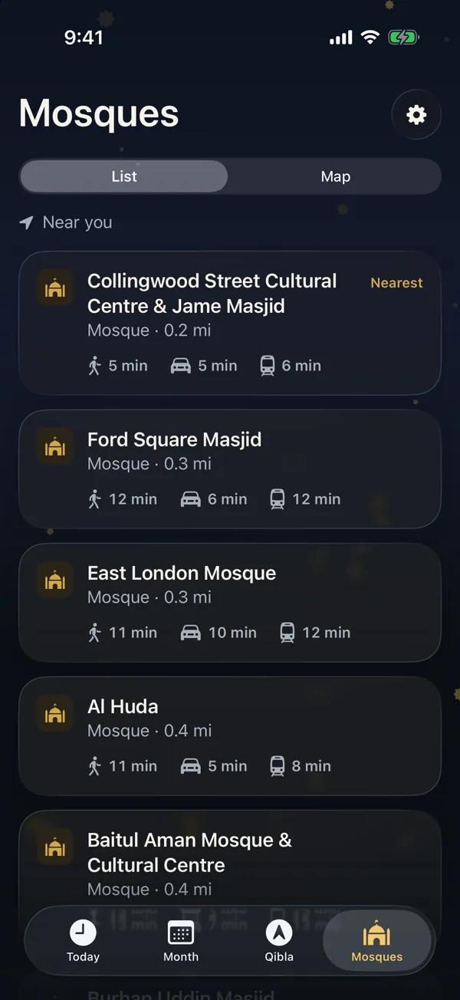

اجعل للصلاة وقتاً
مواقيت الصلاة والأذان والقبلة على iPhone وApple Watch. تُحسب على هاتفك، فيعمل دون إنترنت.



المساجد القريبة منك
مدة الوصول سيراً وبالسيارة وبالمواصلات العامة، ثم الاتجاهات في Apple Maps أو Google Maps أو Waze.
الصلاة القادمة، بعدٍّ تنازلي
الصلوات الخمس والشروق لليوم، والوقت المتبقي حتى الصلاة القادمة.
القبلة بالواقع المعزز
اتبع مساراً على الأرض نحو الكعبة، أو استخدم البوصلة.
نداءٌ لكل صلاة
الأذان في وقته
اختر الأذان كاملاً أو تنبيهاً قصيراً أو الصمت، لكل صلاة على حدة.
قبل أن يخرج الوقت
تذكير قبل خروج وقت الصلاة بـ5 إلى 60 دقيقة، حتى لا يأخذ يومك المزدحم صلاة العصر.
العدّ التنازلي على شاشة القفل
نشاط مباشر يعدّ الوقت حتى الصلاة القادمة على شاشة القفل وفي Dynamic Island.
Thursday 26 November
7:30
 Isha العشاء
Isha العشاء
at 7:57 PM
27:12
Maghrib ends soon3m ago
30 min left in Maghrib time. Pray if you haven’t yet.
Maghrib prayer49m ago
It’s time for Maghrib prayer.
على معصمك
صلوات اليوم وبوصلة القبلة وعدّ تنازلي على واجهة الساعة، في الإضافات وفي Smart Stack.

صلوات اليوم
الصلوات الخمس والشروق، مع تمييز الصلاة القادمة.

على واجهة الساعة
الصلاة القادمة وعدّ تنازلي، في الإضافات.

القبلة
بوصلة على معصمك، تتحول إلى الأخضر حين تتجه نحو مكة.
كل ما يحيط بالصلوات الخمس
يعمل دون إنترنت
تُحسب مواقيت الصلاة والقبلة على هاتفك. بعد حفظ موقعك لا تحتاج إلى أي اتصال.
المواقيت التي يتبعها مسجدك
طريقة الحساب المعتمدة في بلدك، والعصر على المذهب الشافعي أو الحنفي، وتعديل كل صلاة بالدقائق.
الشهر في صفحة واحدة
جدول شهري تشاركه أو تطبعه في ملف PDF من صفحة واحدة.
الأيام المسنونة
تذكير بالجمعة والأيام البيض والاثنين والخميس وعرفة وعاشوراء والثلث الأخير من الليل.
الأدوات
صلوات اليوم والصلاة القادمة على الشاشة الرئيسية وشاشة القفل.
Siri والاختصارات
اسأل Siri عن موعد الصلاة القادمة، أو أضفه إلى اختصار.
التاريخ الهجري
بجانب تاريخ اليوم، ويمكن تعديله يوماً أو يومين ليوافق رؤية الهلال عندك.
بلغتك
13 لغة، ونص أكبر، وVoiceOver، والمظهر الفاتح والداكن.
نداء لا يعرف عنك شيئاً
بلا حساب ولا إعلانات ولا تحليلات. لا يجمع نداء أي بيانات.
اقرأ سياسة الخصوصية